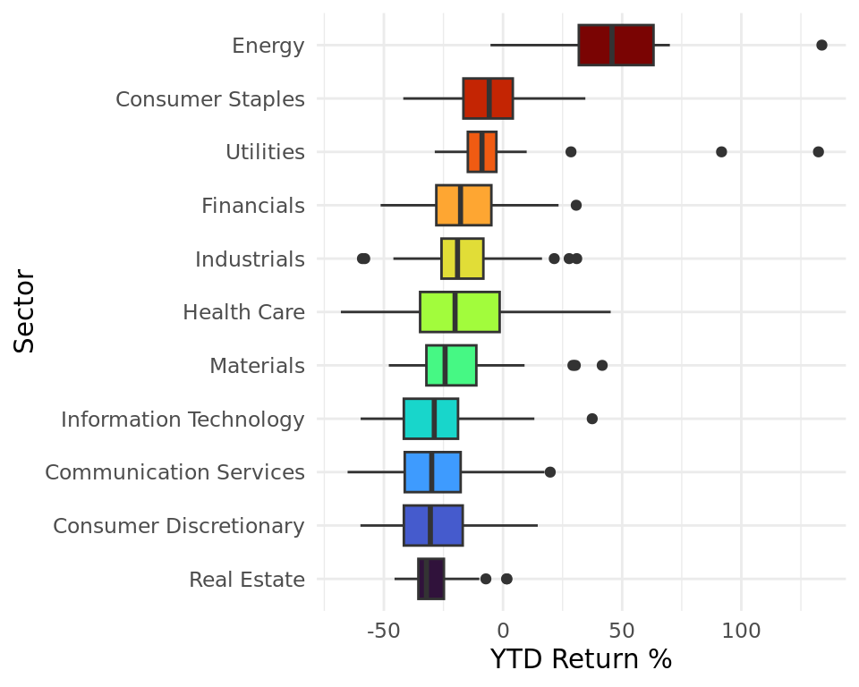

The Impacts of Inflation and Interest Rates on the Stock Market
Report
Introduction
This year, interest has ballooned from nearly 0% at the beginning of the year to about ~4% currently (the highest it’s been since the 2008 recession), as inflation has been trending at ~8% in recent months. The current high-rate economic climate has led to a stock-market slump, with the S&P 500 index having fallen ~14% year to date, signaling a potential recession in the near future. With our research, we sought to explore the relationship between stock-market performance and interest and inflation rates, both throughout the past several decades and in more recent years, to determine whether the current negative correlation between rates and returns has also held true in the past. Furthermore, we also sought to discover whether companies within certain sectors have performed better than others recently, given the high rates characteristic of this year. Therefore, we are interested in answering the following questions:
How have these rates (inflation and interest) historically impacted the returns of the stock market? How closely has the current performance of the market (the past two years) followed these historical trends?
Does the current high-rate economic climate disproportionately affect some companies/sectors more than others? If so, why might this be?
For our historical analysis, we’ll utilize a data set that includes yearly averages for the federal funds rate, inflation rate, and the S&P 500’s return percentage from 1961 to 2020 in order to examine trends during this time frame. For our current-day analysis, we’ll utilize a data set that details the S&P 500’s daily performance over the past two years to compare our historical findings with recent trends. Lastly, we have a data set that includes each company in the S&P 500 index, along with their sector and year-to-date performance, which we’ll use to examine whether certain companies/sectors have performed better as rates have risen throughout this year.
We believe the overall stock market would be hurt by high inflation and corresponding high interest rates, both because consumers’ discretionary incomes drop and because companies are disincentivized from borrowing, due to the higher costs associated with taking out a loan. We expect to see this relationship in our historical analysis and our current-day analysis. Conversely, in times of lower rates, we expect market returns to be higher, on average. Though we expect the stock market as a whole to suffer from high rates, we believe certain sectors of the economy could serve as silver linings for investors’ pockets; these industries include: energy, health care, utilities, and consumer staples. We believe these sectors could perform better than the aggregate market because they sell essential goods that consumers must purchase no matter the state of the economy.
Note: We are using the S&P 500 as a model of the performance of the entire market, and we are using the federal-funds rate, the interest rate at which banks loan to other banks, to model the general trend of all interest rates. We believed these are logical assumptions, as the S&P 500 includes the 500 largest US-based companies (and thus covers a large portion of the total market) and the federal-funds rate generally serves as a benchmark for all other interest rates (because it is indirectly influenced by the Federal Reserve’s policies). All of our observations feature the performance of the market (S&P 500) or an individual company in the S&P 500 on a specific day/month/year. Also, YTD stands for year to date, meaning the time period from the beginning of the year to current day.
Part 1: Historical and Current-day Analysis
Sources for Historical Data:
Federal Funds Rate and Inflation Rate: Macrotrends (https://www.macrotrends.net/2015/fed-funds-rate-historical-chart)
S&P 500 Annual Returns: Slickcharts (https://www.slickcharts.com/sp500/returns)
Monthly Statistics (scraped): Official Data (https://www.officialdata.org/us/stocks/s-p-500/1900).
All of these sites collected these data by retrieving the data published publicly on stock exchanges, except for the federal-funds rate–this data was collected from the World Bank. In addition, each of these sites updates their data monthly/yearly (although they could update it daily, as they are collecting live data). Each observation represents a month in a year (between 1961 and 2020) and includes the following variables:
| Variable | Definition |
|---|---|
| year | year in which observation was recorded |
| month | month in which observation was recorded |
| monthly_return | total stock market’s monthly return |
| year_to_date_return | S&P 500’s yearly return |
| mean_fed_funds_rate | mean annual interest rate set by the Federal Reserve |
| inflation_rate | mean annual inflation rate |
| decade | represents decade in which observation was made |
| rate_type | “low” if both inflation_rate and mean_fed_funds_rate < 5, else “high” |
| return_type | “gain” if year_to_date_return > 0, else “loss” |
We created our historical data set by joining the data we obtained from the three sources mentioned above by year, leaving us with a data frame that includes the mean federal funds rate and mean inflation rate, as well as the S&P 500’s annual returns, for each year from 1961 to 2020. Due to the formatting of the files, we occasionally had to split variables into two separate columns (e.g., year and mean_fed_funds_rate) and/or remove the first several rows for each data set before joining our data sets to create our data frame to be used in our analysis.
Using line graphs, we visualized relationship between interest/inflation rates and average yearly returns of the stock market from 1961 to 2020.
Next, we determined the best and worst 10 years of performance for the stock market by sorting by year_to_date_return and arranging in ascending (worst) and descending (best) order, in order to examine the years individually rather than as a trend across time.
| year | ytd_ret | inflation_rate | mean_funds_rt |
|---|---|---|---|
| 1995 | 37.58 | 2.8054 | 5.83 |
| 1975 | 37.20 | 9.1431 | 5.82 |
| 1997 | 33.36 | 2.3377 | 5.46 |
| 1980 | 32.42 | 13.5492 | 13.35 |
| 2013 | 32.39 | 1.4648 | 0.11 |
| 1985 | 31.73 | 3.5456 | 8.10 |
| 1989 | 31.69 | 4.8270 | 9.21 |
| 2019 | 31.49 | 1.8122 | 2.16 |
| 1991 | 30.47 | 4.2350 | 5.69 |
| 2003 | 28.68 | 2.2701 | 1.13 |
| year | ytd_ret | inflation_rate | mean_funds_rt |
|---|---|---|---|
| 2008 | -37.00 | 3.8391 | 1.92 |
| 1974 | -26.47 | 11.0548 | 10.51 |
| 2002 | -22.10 | 1.5860 | 1.67 |
| 1973 | -14.66 | 6.1778 | 8.74 |
| 2001 | -11.89 | 2.8262 | 3.88 |
| 1966 | -10.06 | 3.0151 | 5.11 |
| 2000 | -9.10 | 3.3769 | 6.24 |
| 1962 | -8.73 | 1.1988 | 2.71 |
| 1969 | -8.50 | 5.4624 | 8.21 |
| 1977 | -7.18 | 6.5017 | 5.54 |
Source for Current Data:
- Investing.com (https://www.investing.com/indices/us-spx-500-historical-data)
Investing.com gets their data from financial-data providers, including stock exchanges and/or directly from market makers (who set stock prices to match supply and demand). The data is collected in real time by monitoring transactions (selling, buying, etc.) executed in the stock market, which correspond to increases/decreases in prices. Each observation represents a different day (between 1 October 2020 and 28 October 2022) and includes the following variables:
| Variable | Definition |
|---|---|
| date | day on which observation was recorded |
| price | closing daily price for the S&P 500 |
| open | opening daily price for the S&P 500 |
| daily_diff | represents daily change in price: price - open |
| gain | “gain” if daily_diff > 0 (positive return for the day), else “loss” |
To create our current-day data frame, we pulled data from Investing.com. Then, we created daily_diff to measure the daily change in stock price; using daily_diff, we were then able to create another variable gain, which takes on the “gain” if daily_diff > 0 and “loss” otherwise.
Part 2: Company and Sector Analysis
Sources:
Name, Symbol, and Sector: DATA HUB (https://datahub.io/core/s-and-p-500-companies-financials#resource-constituents)
Weights (scraped): Slickcharts (https://www.slickcharts.com/sp500)
Prices and Returns (scraped): Slickcharts (https://www.slickcharts.com/sp500/performance)
DATA HUB collected their data from S&P Dow Jones Indices (which, in turn, is collected daily from stock exchanges), and Slickcharts their data directly from the stock exchange. Each observation represents a different company and includes the following variables:
| Variable | Definition |
|---|---|
| name | name of company in S&P 500 |
| symbol | ticker symbol used to identify companies on stock exchange |
| weight | percentage weighting of company in S&P 500 |
| original_price | price of company’s stock at beginning of 2022 |
| current_price | price of company’s stock as of October 2022 |
| ytd_return_num | company’s year-to-date return percentage, expressed as a number |
| sector | company’s industry |
| return category | “gain” if ytd_return_num > 0 (positive return for the year), else “loss” |
| isEssential | “Essential” if company is in Energy, Utilities, or Consumer Staples sector, else “Nonessential” |
To create the data frame we’re using for our sector analysis, we first scraped the weights and prices/returns from two separate webpages on Slickcharts. To combine these two data sets, we joined them by symbol, which is the ticker symbol used to identify each company on the stock market. Originally, the year-to-date return percentage was expressed as a character followed by the % symbol; to make our data easier to analyze, we removed the % sign and then converted the character to a double and stored the result in ytd_return_num. We then created return category to determine whether a company’s stock had increased in value this year, using the ytd_return_num variable we created. Finally, we had to update/add the symbols for several companies, either because their ticker symbol was updated or because they’d only recently been added to the S&P 500 index; we looked up the correct symbols for these companies on Investing.com (used previously to create the data frame for our current-day analysis).
The following violin plot takes into account the concept of essential and nonessential categories, with the category of the company’s sector plotted on the x-axis and YTD returns plotted on the y-axis. We look to see if there is a visible difference between the performance of these two categories over the past year.

Methodology
We decided to use inferential statistics and further exploratory data analysis for both parts of our analyses. We felt it was more applicable to use for our research than modeling, as we had tried to create several linear models predicting S&P 500 returns from interest and/or inflation rates (for part 1), as well as predicting year-to-date returns from sectors (for part 2), but we didn’t include our results because the R-squared values for all these models were low; thus, these models weren’t very helpful to our analysis, so we instead focused on using graphs, tables, and hypothesis tests to conduct our research.
Part 1: Historical and Current-day Analysis
After visualizing the trends that rates and returns have followed from 1961 to 2020 and determining the best and worst ten years by annual returns for that period, we sought to evaluate whether our hypothesis that companies generally perform better in low-rate environments is true using a hypothesis test; in order to do this, we created two new variables for each year, rate_type (high/low) and return_type (positive/negative), so that we could predict the return_type from rate_type. Note that we are treating our historical data (that will be used to conduct this hypothesis test) as a sample from which we can predict future market performance. We then performed a hypothesis test with the following hypotheses:
\(H_0\): \(p_1 - p_2 = 0\)
\(H_A\): \(p_1 - p_2 > 0\),
where \(p_1\) is the proportion of companies who had positive annual returns in low-rate environments and \(p_2\) is the proportion of companies who had positive annual returns in high-rate environments.
We then focused on the recent performance of the market, graphing each day’s closing price with a scatterplot and line graph in order to determine the trend in closing prices from October 2020 through October 2022. Each point represents the median monthly closing price of the S&P 500 index, with each error bar extending down to the minimum daily closing price for the month and up to the maximum daily closing price for the month.

Part 2: Company and Sector Analysis
Before delving deeper into our analysis on the market performance of essential and nonessential sectors, we wished to further explore the sectors themselves. We began by creating two tibbles, one with the five companies in the S&P 500 with the highest YTD returns and the other featuring the five companies with the lowest YTD returns, to see if certain sectors seem to be common among the high- or low-performing companies.
| name | symbol | ytd_ret | sector |
|---|---|---|---|
| Occidental Petroleum | OXY | 133.80 | Energy |
| Constellation Energy | CEG | 132.37 | Utilities |
| EQT | EQT | 91.70 | Utilities |
| Hess Corporation | HES | 70.01 | Energy |
| Marathon Petroleum | MPC | 69.03 | Energy |
| name | symbol | ytd_ret | sector |
|---|---|---|---|
| Align Technology | ALGN | -68.05 | Health Care |
| Match Group | MTCH | -65.23 | Communication Services |
| Meta Platforms | META | -60.52 | Communication Services |
| Netflix | NFLX | -60.02 | Communication Services |
| Carnival Corporation | CCL | -59.84 | Consumer Discretionary |
Next, we evaluated the sectors as a whole with the following boxplots, with sectors plotted along the y-axis and returns plotted along the x-axis, to gain a better understanding of which sectors have performed best over the past year. This graph visualizes the sectors’ median YTD returns and return variation in performance among companies within each sector.

Armed with a greater understanding of sector performance, we returned to our analysis on companies in essential and nonessential industries. To evaluate whether our belief that companies in essential industries have performed better this past year than those in nonessential sectors is true, we performed a hypothesis test:
\(H_0\): \(\mu_1 - \mu_2 = 0\)
\(H_A\): \(\mu_1 - \mu_2 > 0\),
where \(\mu_1\) is the mean year-to-date return for companies in essential sectors and \(\mu_2\) is the mean year-to-date return for companies in nonessential sectors.
Results
As you can see in Figure 1, inflation and interest rates are very closely related (especially prior to 2000), with interest and inflation peaking and dipping at similar times. This trend makes sense, as the Federal Reserve tends to raise interest rates when inflation rises, in an attempt to slow the economy down. (This is why the Federal Reserve is raising interest rates now.) Figure 1 also shows that market returns are extremely volatile and (at least according to this graph) don’t seem to depend on either interest or inflation, contrary to our hypothesis.
Table 1 shows that almost all of the best years for S&P 500 returns feature either a low interest or inflation rate (<5%), with many having both low interest and inflation rates. Noticeable outliers include 1980, whose rates were both over 13%, and 1975, whose interest rate was almost 6% and inflation 9%. This trend of high returns correlating with lower rates does support our hypothesis. On the other hand, we expected many of the worst years for market returns to have high rates; surprisingly, this was not the case for about half of the worst years, as shown in Table 2. Though some years did support our hypothesis, including 1974, 1973, 1969, and 1977, the others featured surprisingly low rates. We suspect that these unanticipated poor performance of the stock market during times of low rates could possibly be explained by recessions occurring during these years; in recessionary gaps, inflation tends to be lower because the economy has slowed significantly, and interest rates tend to be low as well in an attempt to re-stimulate the economy by encouraging borrowing.
Using our historical data, we then ran a hypothesis test to determine whether years featuring low rates had greater proportions of companies with positive annual returns than years with high rates. After conducting our hypothesis test with a 5% significance level, we found our p-value to be 0.0002. Since the p-value is less than our significance level, we reject the null hypothesis in favor of the alternative hypothesis. The data provide convincing evidence that the proportion of companies who had positive annual returns in low-rate years is greater than the proportion of companies who had positive annual returns in high-rate years. (A visualization of our test is provided in the appendix.)
In Figure 3, we can see that the median monthly closing prices for the S&P 500 follow a generally positive trend from October 2020 to December 2021/January 2022, where they peak for the two-year period and then begin to generally decline through October 2022. This trend can possibly be explained by the very low rates characteristic of the Covid-19 era–the interest rate during the period prior to February 2022 was steady at a low 0.25%. As soon as the Federal Reserve began hiking rates in March 2022 to combat rising inflation that had begun in late 2021, however, daily closing prices began to fall. This supports our hypothesis that rising rates generally correlate with a decrease in stock prices; it also supports the findings of our hypothesis test, as the S&P 500’s closing price increased when rates were low and decreased when rates began to rise.
In Table 3, we can see that a lot of the stocks that have similar performance also share a sector–the top high-performing stocks exclusively belong to companies in the energy and utility sectors, while consumer staples, communication services, and information technology seem to be the hardest-hit sectors of the low-performing stocks, as shown in Table 4. Using Figure 4, we can clearly see that the lowest sectors by median YTD return are Consumer Discretionary, IT, and Consumer Services, with the highest being Energy, Utilities, and Consumer Staples (these sectors happen to be the same sectors as those that we deemed to be essential, which supports our hypothesis that essential industries have performed better throughout this past year.
As evidenced in Figure 2, there is a visible difference in the essential and non-essential industries. Essential industries have a higher density of values above zero and higher maximum returns and lower minimum returns, implying that essential companies’ stocks seem to have seen higher YTD returns thus far (though many are still negative). To determine whether this perceived difference was statistically significant, we conducted another hypothesis test and found our p-value to be approximately 0. Since the p-value is less than our significance level (5%), we reject the null hypothesis in favor of the alternative hypothesis. The data provide convincing evidence that the mean year-to-date return for companies in essential industries is greater than that of companies in nonessential industries.
Discussion
Our research aimed to explore the relationship between interest and inflation rates and the performance of the stock market to showcase beneficial investment decisions in the context of today’s market and fluctuating economic climates. We hypothesized that the overall stock market would be hurt by high inflation/interest rates and that certain sectors of the economy, specifically those that we deemed to be essential, would be less affected than others in these circumstances. Overall, our data has supported our hypotheses to a fair extent.
From our historical and current-day analyses, we conclude that higher returns in the stock market generally correlate with lower interest and inflation rates, but years with lower returns can’t be explained as neatly, at least with the data we’re using. A potential confounding variable could be whether our economy was experiencing a recession during that year, as recessions sometimes create environments where returns in the stock market are poor even in times of low rates. Given this, it was difficult to apply any predictions to our current-day analysis, since the market currently features very low (mostly negative) returns. However, our findings in the current-day analysis support our initial hypothesis that the performance of the stock market would be hurt by higher interest and inflation rates; as Figure 3 depicts, the daily closing price of the S&P 500 has fallen significantly over the past year following the rapid increase in inflation and interest rates.
Through our sector analyses, we conclude that S&P 500 companies’ market performance has varied by sector, with companies in essential sectors having performed better, on average, than those in nonessential sectors. Figure 4 highlights the variations in performance among the sectors, showing how industries such as Consumer Discretionary, IT, Real Estate, and Consumer Services are some of the worst-performing sectors, while Energy is by far the highest performing (it’s the only sector with a positive median year-to-date return), followed by Consumer Staples, Utilities, and Financials. By grouping companies into “essential” and “nonessential” categories and visualizing their performance in Figure 2, we can see that companies in the essential category seemed to have performed better; our hypothesis test substantiated this finding, as we found sufficient evidence to reject the null hypothesis in favor of our alternative hypothesis: companies in essential industries have seen a higher mean YTD return than those in nonessential industries.
As mentioned before, we faced several limitations in our historical analyses, as the stock market can underperform even in times of low rates when the economy is currently in a recession. To address this confounding variable, future research should take into account whether the time period being analyzed was during a recessionary period. Furthermore, we used the S&P 500 index to generalize about the stock market as a whole; future research should seek to determine if our results are robust when utilizing other stock indices (NASDAQ 100, Dow Jones, etc.) for analysis. Finally, we only examined sector performance over the past year (i.e., in times of high interest and inflation rates). Thus, future research should address market performance across sectors in low-rate economic environments to determine if sector performance varies depending on rates.
Appendix
The following is a visualization of our p-value and null distribution (of 5,000 samples) for our hypothesis test on whether the proportion of companies who had positive annual returns in low-rate years was greater than the proportion of companies who had positive annual returns in high-rate years.

The following is a visualization of our p-value and null distribution (of 5,000 samples) for our hypothesis test on whether companies belonging to essential sectors have seen better year-to-date returns than companies belonging to nonessential sectors.